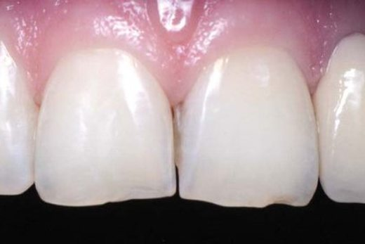

- Лікар клініки-студії «Аполлонія»
- Сертифікований тренер Dentsply Sirona
- Викладач НЦ «Аполлонія»
- Член УАЕС
- 13 статей у «ДентАрті»
Адгезивні мостоподібні конструкції
Заміщення дефекту зубного ряду без обточування опорних зубів — методика, розроблена для передніх і бічних ділянок.


Спеціальні ефекти й ефект відбілювання
Відтворення оптичних ефектів природного зуба та реставрації у відбіленому відтінку.

Спеціальні ефекти у реставрації зубів. Частина 1
Ольга Пономаренко «ДентАрт» № 3 (92) · 2018
Спеціальні ефекти в реставрації зубів. Частина II
Ольга Пономаренко «ДентАрт» № 1 (94) · 2019
Реставрація зубів з Bleach-ефектом — затребуваний тренд в естетичній стоматології
Ольга Пономаренко «ДентАрт» № 3 (100) · 2020
Реставрація зубів зі спецефектом Natural-Bleach
Ольга Пономаренко «ДентАрт» № 2 (115) · 2024Реконструкція лінії усмішки
Консервативна корекція естетики фронтальної групи зубів прямою технікою.

Матеріали й техніки прямої реставрації
Клінічні протоколи роботи з композитами, армування та відновлення зубних рядів.

Естет-Ікс ЕйчДі і Церам-Ікс Дуо — надійні компоненти для клінічного успіху біоміметичної реставрації
Ольга Пономаренко «ДентАрт» № 1 (74) · 2014
Скловолоконне армування прямих реставрацій
Ольга Пономаренко «ДентАрт» № 3 (80) · 2015
Особливості реставрації зубів і зубних рядів
Ольга Пономаренко «ДентАрт» № 2 (107) · 2022
Приклад відновлення бічних зубів композитами сімейства Neo Spectra ST
Ольга Пономаренко «ДентАрт» № 3 (108) · 2022Про добірку. Тут зібрано авторські публікації Ольги Пономаренко, які вже перенесено в онлайн. Крім них він понад двадцять років веде в «ДентАрті» рубрику «Вітальня» — інтерв'ю з українськими та закордонними колегами; ці розмови шукайте в загальному каталозі статей. Нові номери публікуємо поступово, тож сторінка поповнюватиметься.
Про журнал: «ДентАрт» видається з 1995 року і став першим в Україні фаховим стоматологічним журналом, який поєднав науку, клінічну практику та естетику.